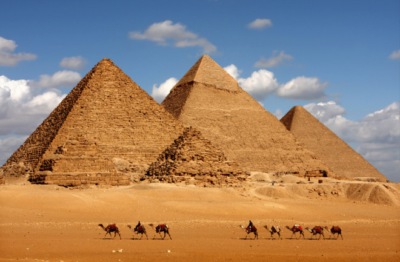
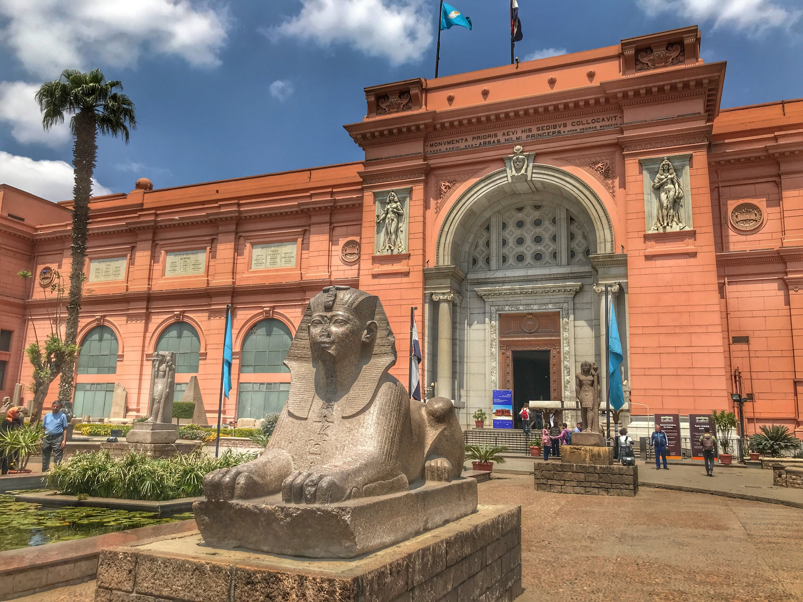

MISIR
1,002,450 kilometrekarelik yüz ölçümü ile Orta Doğu’nun en büyük ülkelerinden biri olan Mısır, son yılların en sevilen turizm rotalarından biri.
Orta Doğu ve Kuzey Afrika coğrafyaları arasında bir tür köprü olma özelliği gören Mısır, 7.000 yıllık çok köklü bir geçmişe sahip. Bugüne dek sayısız medeniyete ev sahipliği yapmış olması ise halen farklı uygarlıkların izlerini taşımasını sağlıyor.
Bu mistik kentin zengin tarihi ve doğal güzelliklerinden birkaçını sizin için derledik.
Mısır'ın Genel Özellikleri
Resmi adı Mısır Arap Cumhuriyeti olan Mısır, Kuzey Afrika’nın en kalabalık ülkesi. Köklü geçmişi ve zengin tarihi mirası ile diğer Arap ülkelerinden ayrılan ülkenin geçmişi milattan önce 3150 yıllarına dayanıyor.
Dünyanın her yerinden ziyaretçiye ev sahipliği yapan Mısır, yaklaşık 7000 yıllık geçmişi olduğundan birçok medeniyetin de doğduğu yer olarak öne çıkıyor.
Sanatsal ve kültürel aktiviteler bakımından ülkenin en önemli şehirleri arasında yer alan Kahire, ülkenin başkenti ve Afrika’nın en büyük şehri olarak dikkat çekiyor. Tutankamon'un kalıntılarının da bulunduğu Mısır Müzesi, Kahire'de bulunuyor.
Dünyanın Yedi Harikası'ndan biri kabul edilen piramitlere de ev sahipliği yapan Mısır, sfenksler, tapınak ve mezarlıklar bakımından oldukça zengin bir ülke.
Ne Zaman Gidilir?
Sıcak ve kuru bir iklime sahip olan Mısır’da yaz aylarında 45 dereceye ulaşan sıcaklık kışın 15 dereceye kadar düşüyor. Soğuk bir iklimin görülmediği ülkede gece ile gündüz sıcaklık farklılığı oldukça yüksek.
Mısır seyahati plânınızda gündüz ile gece sıcaklık farklılıklarını göz önüne alarak kıyafet seçiminde bulunmak faydalı oluyor.
Çok sıcak geçen yaz aylarında turistik bakımdan çok yoğun talep görmeyen ülkeye, yumuşak ve ılık hava koşullarından dolayı kış aylarında gidilebilir.
Uzun sahil şeritlerine sahip ülkede Nil Nehri kıyıları turistik açıdan yoğun ilgi gören bölgeler arasında yer alıyor. Dalgıçların en çok ilgi gösterdiği Kızıldeniz'le uzun sahil şeritlerini paylaşan ülke, özellikle su altı zenginlikleri bakımından alternatif rota seçeneklerinden biri olarak öne çıkıyor.
Siz de dalış imkanlarından faydalanmak, tropikal zenginliğe sahip su altı canlılarıyla tanışmak istiyorsanız, yılın en uygun zaman dilimi olan ilkbaharı tercih edebilirsiniz.
Nasıl Gidilir?
Mısır’a en konforlu şekilde ulaşmak için hava yolu ulaşım alternatifleri değerlendiriliyor. Türkiye’den Kahire’ye 2 saat süren yolculuk sonunda İskenderiye, Şarm El Şeyh ya da Hurgada’ya ulaşabilirsiniz.
Türkiye'den Mısır'a uçak yolculuğu için çeşitli hava yolu şirketlerinin kampanyalı uçuş seçeneklerini değerlendirebilirsiniz.
Tarihi ve Kültürü
Eski çağlara dayanan köklü bir geçmişe sahip Mısır, birçok medeniyete ev sahipliği yaparken hem ağırladığı uygarlıklardan etkilenmiş, hem de topraklarında bugüne kadar yaşamış kültürleri kendi atmosferine büründürmüş.
Festivaller ve Fuarlar
Mısır'da önemli sanat ve eğlence aktiviteleri yapılıyor. Kahire Uluslararası Film Festivali kasım-aralık aylarında düzenlenen önemli festivalleri arasında yer alıyor.
Aynı zamanda mart ayında da çocuklar için Uluslararası Film Festivali düzenleniyor.
Mısır'da Gezilecek Yerler
- Mısır Piramitleri
Mısır’ın turistik açıdan en önemli noktası olan Mısır Piramitleri, Kahire’de yer alıyor.
İnşa ve yapım süreçleri hala belirsizlik ve gizem ile dolu olan Mısır Piramitleri, her yıl binlerce turist tarafından adeta akına uğruyor.
Bu devasa yapılar, antik dünyanın yedi harikasından biri olan Keops Piramidi'ni de içerir.
Giza'da bir tatil planlıyorsanız, bu muhteşem anıtları kaçırmamalısınız.

- Kahire Mısır Müzesi
Kahire şehrinde yer alan Kahire Mısır Müzesi, Orta Doğu’nun en eski ve değerli müzelerinden biri olma özelliği taşıyor.
En büyük Firavun koleksiyonuna sahip olması ile dikkat çeken Kahire Mısır Müzesi, ziyaretçiler tarafından yoğun bir ilgi görüyor.
1902 yılından beri ziyaretçileri için kapılarını açık tutan müze, Fransız mimar Marcel Dourgenon tarafından tasarlandı.

- Karnak Tapınağı
Karnak Tapınağı, Mısır'ın Luksor şehrinde bulunan ve 2000 yıldan fazla süren bir inşaat sonucu ortaya çıkan devasa bir tapınak kompleksidir.
Dünyadaki en büyük antik dini mekân olan Karnak, tanrı Amon'un merkeziydi ve her firavun ona saygı göstermek için tapınağa yeni bölümler ekledi.
Karnak, Mısır tarihi ve mitolojisi hakkında çok şey anlatan bir açık hava müzesi gibidir. Tapınağa girişte, koç başlı sfenkslerle süslü bir cadde karşılar. Tapınağın en etkileyici bölümü ise 134 sütunlu hipostil salonudur.
Karnak Tapınağı, Mısır'ın en çok ziyaret edilen antik yerlerinden biridir ve görülmesi gereken bir harikadır.
- Ras Muhammad Ulusal Parkı
Ücretsiz olarak giriş yapabileceğiniz Ras Muhammad Ulusal Parkı, kalabalık arkadaş grupları ve çocuklu aileler içinde en ideal seçeneklerden biri. Sina Yarımadasının güney kısmında yer alan Ras Muhammad Ulusal Parkı iyi korunmuş mercan resifleri ile dikkat çekiyor.
Tekne turlarından yürüyüş parkurlarına kadar pek çok olanak ve aktivite park içerisinde sunuluyor.
ÖNERİMİZ:
Eğer talep ederseniz dalış yapan turları da tercih edebilir, keyifli bir deneyim yaşama şansı elde edebilirsiniz.
- Gize Sfenksi
Yatan aslan biçimde kafası ile bir firavun başı şeklinde tasarlanmış Gize Sfenksi, Mısır’da mutlaka görülmesi gereken heykellerin başında geliyor. Aslanların Antik Mısır mitolojisinde kutsal sayıldıkları bilindiği için Gize Sfenksi, Mısırlılar adına oldukça önemli bir yere sahip.
Büyü güçleri kullanarak firavun mezarlarını ve piramitleri koruması amacıyla inşa edildiği düşünülen Gize Sfenksi ise hem yerel halk hem turistler tarafından çok yoğun bir ilgi görüyor.
- Nil Nehri
Dünyanın en uzun ikinci nehri olan Nil Nehri, havzası Afrika kıtasının onda birini kaplayacak kadar genişliğe sahip. Nehri görmek için herhangi bir ücret talep edilmiyor. Ancak nehirde daha keyifli bir deneyim yaşamak için farklı şirketler tarafından planlanan turlara katılabilirsiniz.
Turlar içerikleri ve süreleri doğrultusunda farklı fiyatlar ile sizlere sunuluyor.
Sunduğu eşsiz manzaraları ile büyüleyici bir güzelliğe sahip Nil Nehri, Mısır’da mutlaka görülmesi gereken doğal yapıların başında geliyor.
Bunun yanı sıra Nil Nehri etrafında pek çok farklı işletme ve restoran olduğunu dile getirmek de mümkün.
Ne Yemelisiniz?
Mısır topraklarının büyük bir kısmı çöllerden oluşmasına rağmen zengin bir mutfak kültürüne sahip olduğu bilinmektedir. Mısır yemek kültüründe baklagiller, sebzeler ve meyvelerin yoğun bir şekilde kullanılması kullanılmaktadır.
Sizin için eşsiz Mısır yemeklerinin birkaçını derledik.

- Ful Medames
Fasulye, sarımsak, yağ ve limon suyu ile hazırlanan ful medames, Mısır'ın en popüler yemeklerinden biridir. Medames kelime olarak 'gömülü' anlamına gelir. Yemeğin pişirildiği kap, kömür veya kumun içerisine gömülür.
Ardından pişirme işlemine geçilir. Hazırlanan ful medames, tahin, pastırma, domates sosu ve yumurta eşliğinde servis edilir.
- Koşeri
Koşeri, 19. yüzyılın ortalarında itibaren tüketilen, Mısır’ın ulusal yemekleri arasında yer alan yaygın bir sokak yemeğidir.
Orta Doğu, Hint ve İtalyan mutfaklarından parçalar taşıyan koşerinin temel içeriğinde pirinç, makarna ve mercimek bulunmaktadır.
- Falafel
Orta Doğu mutfağına ait bir yemek olan falafel, Lübnan mutfağı, İsrail ve Filistin'de sık sık tüketilir. Ülkemizde en çok Hatay mutfağında tüketilen falafel, nohut, sarımsak, kuru bakla, kişniş ile hazırlanır.
Mısır mutfağında da tüketilen falafel, ara sıcak olarak servis edilir.
- Kadayıf
Mısır'ın hemen her restoranında kadayıf tatlısına rastlamak mümkündür. Türk mutfağına özgü bir tatlı olan kadayıf, Mısır mutfağında büyük bir ilgi görür. Özellikle kadayıfla hazırlanan künefe tatlısı, yemeklerden sonra servis edilir.
Künefenin yanı sıra revani (basbousa) ve baklava da Mısır mutfağında tüketilen tatlılardandır.